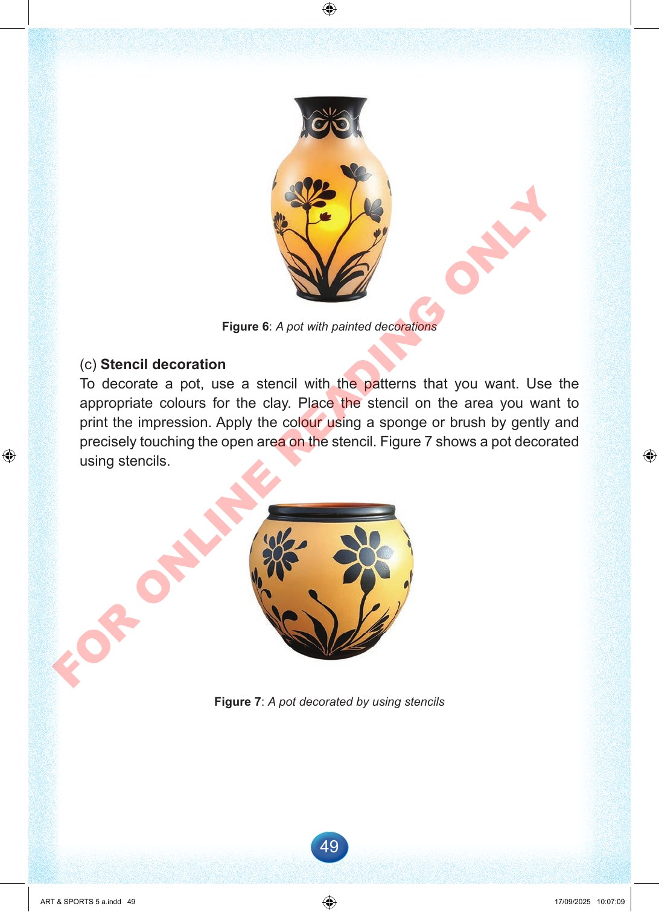

49
Figure
6:
A
pot
with
painted
decorations
(c)
Stencil
decoration
To
decorate
a
pot,
use
a
stencil
with
the
patterns
that
you
want.
Use
the
appropriate
colours
for
the
clay.
Place
the
stencil
on
the
area
you
want
to
print
the
impression.
Apply
the
colour
using
a
sponge
or
brush
by
gently
and
precisely
touching
the
open
area
on
the
stencil.
Figure
7
shows
a
pot
decorated
using
stencils.
Figure
7:
A
pot
decorated
by
using
stencils
ART
&
SPORTS
5
a.indd
49
ART
&
SPORTS
5
a.indd
49
17/09/2025
10:07:09
17/09/2025
10:07:09
F
O
R
O
N
L
I
N
E
R
E
A
D
I
N
G
O
N
L
Y